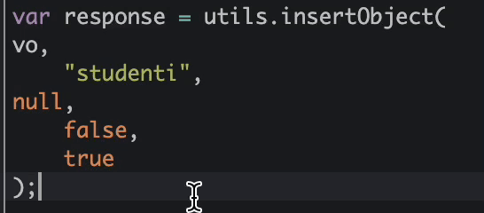

CHANGELOG
V1.1.8
- Ace Editor beautifier
FIX - La precedente release presentava dei problemi nell'iniettare gli script necessari per il beautify del codice.
- Aggiornate dipendenze
Aggiornate le dipendenze e alleggerita la dimensione dell'estensione
- Javascript GAE sync status
Funzionalità che consente di ricordare all'utente se ha allineato l'azione dopo il salvataggio (disattivabile in impostazioni)
- Finestra pop-up darkMode
Convertita finestra pop-up con tema dark
- JSONEditor in DevTools
Adesso sarà possibile sfruttare JSONEditor direttamente dagli strumenti sviluppatore di chrome!
V1.1.7
- Ace Editor beautifier
FIX - La precedente release presentava dei problemi nell'iniettare gli script necessari per il beautify del codice. La funzionalità rimane comunque in BETA in quanto deve interagire con il DOM dell'applicazione e non in ambiente isolato (da utilizzare consapevolmente).
V1.1.6
- Migliorato Selenium Delayer
Modificata la logica di inserimento pause.
- Ace Editor beautifier
Codice sempre mal formattato? Nessun problema, è stata aggiunta la macro ⌘+⇧+8 tramite la quale è possibile formattare blocchi di codice all'interno di AceEditor (Attivabile da impostazioni - dark mode platform).

V1.1.5
- Fav Icon changer
Troppi designer aperti? da oggi è possibile personalizzare l'icona di ogni ambiente!
- Aggiornamento tema
Sono state apportate delle modifiche alla dark mode (qualora si preferisse il tema precedente basta sostituire il file custom.css con custom.css copia)
- Selenium .side delayer
Test automatici che noia. E' stato introdotto uno script tramite il quale è possibile aggiungere una pausa prima di ogni comando (simula ciò che è possibile fare con Selenium IDE).
V1.1.4
- Macro
Tastiera Italiana? Nessun problema, è stata aggiunta la macro ⌘+⇧+7 tramite la quale è possibile commentare interi blocchi di codice all'interno di AceEditor (Attivabile da impostazioni - dark mode platform).

- Notifiche di aggiornamento
Da oggi la verifica degli aggiornamenti avverrà una volta al giorno (invece di ogni 6 ore)
- JSON Formatter
Fix - migliorato algoritmo passaggio dati da JSON Viewer a JSON Editor (apertura in nuova tab)
V1.1.3
- Migliorato css dark mode
- Impostazioni
E' ora disponibile una pagina di impostazioni dalla quale è possibile personalizzare il funzionamento dell'estensione
- JSON Formatter
Da oggi è possibile modificare la combinazione di tasti per aprire JSON Viewer (Default resta CONTROL+Q)
- Notifiche di aggiornamento
Quando sarà disponibile un nuovo aggiornamento dell'estensione si verrà notificati tramite notifica. Da impostazioni è possibile disattivare questa scelta
- CSS PERSONALIZZATO
La dark Mode offerta non ti piace? da ora è possibile aggiungere il proprio css
V1.1.2
- Migliorato css dark mode
- Aggiunti 2 nuovi temi editor
- JSON Formatter
E' ora possibile consultare in modo rapido ed efficiente le stringhe JSON mal formattate. Per accedere alla funzionalità selezionare il JSON di riferimento e premere CTRL+Q (disponibile in tutti i siti web!)
- Icona dinamica
Da oggi l'icona dell'estensione cambierà colore dinamicamente (Bianca con tema scuro, nera con tema chiaro)
V1.1.1
- Migliorato css dark mode
- Aggiunti 2 nuovi temi editor
- Fix Hints
- Disabilitato Clona traduzioni
Logica ancora in sviluppo